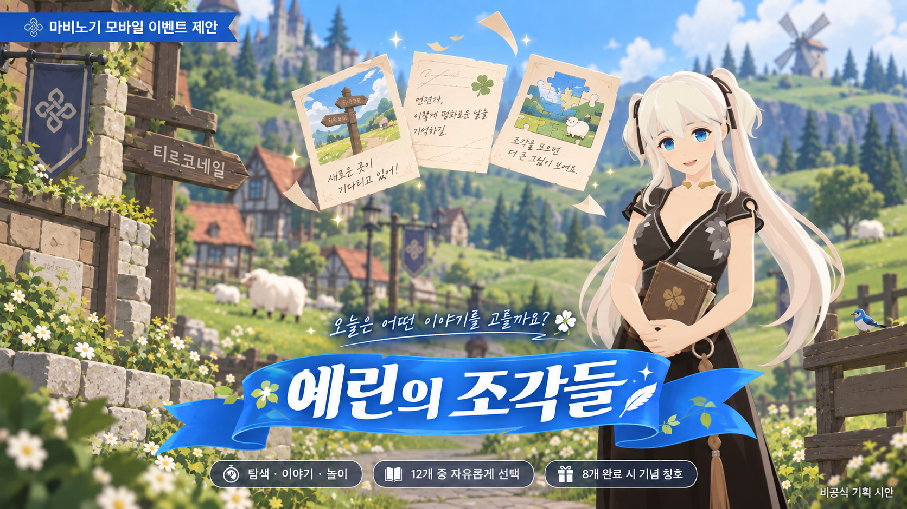
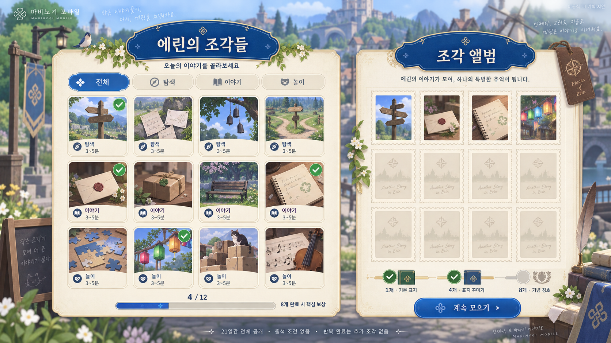

마비노기 모바일 이벤트 기획서 — 『에린의 조각들』
탐색·이야기·놀이로 나뉜 12개 짧은 에피소드 중 원하는 활동을 골라, 나만의 에린 기록을 모으는 선택형 이벤트 기획서입니다. 단순한 출석이나 숙제형 반복을 지양하고, 짧은 접속 시간 안에서도 선택권과 완결감을 제공하도록 설계되었습니다.
이벤트 기획서 원페이저 (One-Pager)

탐색·이야기·놀이로 나뉜 12개 짧은 에피소드 중 원하는 활동을 골라, 나만의 에린 기록을 모으는 선택형 이벤트.
왜 이 이벤트인가?
픽셀라이프의 작고 다양한 경험·세분화된 관심을 ‘활동 선택권’으로 적용합니다. 마비노기 모바일의 이야기 전달 사례와 연결해 짧게 참여해도 하나의 결말이 남도록 설계했습니다. 기존 출석·특정 활동 반복 이벤트와 비교하면 처음 완료한 서로 다른 경험을 누적한다는 핵심 차별점이 있습니다.
| 핵심 항목 | 계획안 |
|---|---|
| 대상·목적 | 짧은 접속에서 세계관과 전투 외 활동을 경험하고 싶은 이용자에게 완결감·선택권 제공 |
| 참여 흐름 | 메뉴 → 이벤트 → 활동 선택 → 짧은 행동·선택 → 조각·결말 기록 → 앨범 |
| 콘텐츠 구성 | 탐색 4개 / 이야기 4개 / 놀이 4개 (총 12개). 각 에피소드 3~5분 소요 목표 |
| 일정 | 21일간 12개 전체 공개, 종료 후 7일간 보상 수령 (총 28일) |
| 핵심 규칙 | 선행 활동·출석·일일 조각 제한 없음. 첫 완료 시에만 조각 1장 지급, 최대 12장 |
| 보상 체계 | 1개: 기본 표지 / 4개: 표지 꾸미기 / 8개: 기념 칭호 ‘조각을 모은 여행자’. 12개는 앨범 완성 표시 |
| 운영 방안 | 중간 단계 저장(체크포인트), 서버별 진행 공유, 반복·중복 지급 방지, 미수령 보상 자동 지급 |
| 평가 지표 | 첫 참여 전환·8종 달성·활동별 중단·활동 시간·체감 부담을 종합적으로 확인 |
짧은 플레이 길이뿐 아니라 활동의 다양성과 순서 선택을 보장합니다. 모든 활동을 완료하지 않아도 핵심 보상을 얻을 수 있으며, 한 활동만 즐겨도 의미 있는 기록이 남습니다.
1. 트렌드 분석 (Trend Analysis)
1.1 주요 키워드: 픽셀라이프 (Pixel Life)
『트렌드 코리아 2026』의 픽셀라이프를 주요 키워드로 선정했습니다. 하나의 거대한 단일 유행보다 세분화된 마이크로 트렌드가 나타나는 변화를 설명하며, 본 기획에서는 이를 ‘이용자가 작고 다양한 경험을 자신의 관심에 따라 선택하는 소비 양상’으로 해석했습니다.
| 적용 요소 | 설계에 반영할 내용 |
|---|---|
| 작은 경험 단위 | 에피소드 하나에서도 시작·행동·결말을 경험할 수 있는 마이크로 루프 |
| 다양한 관심 | 탐색·인물 이야기·가벼운 놀이 중 자신의 취향에 따라 선택 |
| 빠른 전환과 자율성 | 활동 순서와 참여 시점을 이용자가 자율적으로 결정 (선행 퀘스트 제거) |
1.2 다른 후보 키워드와의 비교
| 후보 키워드 | 게임 적용 가능성 | 이번 기획에서의 판단 |
|---|---|---|
| 픽셀라이프 | 짧고 다양한 활동, 선택형 참여 구조 | 주요 근거로 선정 (참여 구조의 핵심 논리) |
| 필코노미 | 기분 전환과 캐릭터 애착을 주는 경험 | 따뜻한 이야기의 표현 방향으로 보조 참고 |
| 근본이즘 | 원작 고유의 지역·활동을 재발견 | 배경 설정(티르코네일) 및 비교 후보로 유지 |
2. 관련 현황 및 기존 공식 이벤트 분석
2.1 시장 흐름 및 강연 분석
| 자료 | 확인한 내용 | 기획에 적용할 해석 |
|---|---|---|
| GDC 강연 보도 (2026) | 숏폼과 경쟁하는 환경에서 짧고 밀도 있는 경험의 가능성 제시 | 이벤트 한 활동 단위에도 완결감 제공 |
| 마비노기 모바일 NDC 강연 | 이야기를 실제 플레이로 전달하고 몰입과 템포를 조정하는 제작 사례 | 텍스트를 읽는 데 그치지 않고 선택·행동으로 체감하도록 구성 |
| 네오위즈 실적발표 보도 | 팬덤 중심 운영과 경험 확장 전략 | 단순 수치 보상 외에 기억할 만한 아카이브 경험 제공 |
| 대만 시장 리포트 | 클래식 IP 및 원작 감성을 다루는 사례 | 익숙한 세계(에린)를 새로운 작은 경험들로 재발견 |
2.2 공식 이벤트와의 비교 대조표
| 항목 | 추석맞이 매일매일 출석 | 다함께 팽이치기 | 본 제안: 에린의 조각들 |
|---|---|---|---|
| 주요 참여 | 접속에 따른 일일 출석 | 특정 사이드 게임 반복 플레이 | 서로 다른 12개 에피소드 선택·완료 |
| 누적 기준 | 출석 일수 (1~14일) | 해당 활동의 누적 플레이 횟수 | 처음 완료한 에피소드 종류 수 |
| 보상 구조 | 일차별 소모품 선물 | 1·2·3회 횟수 미션 선물 | 1·4·8종 완료 시 기록·꾸미기 보상 |
| 재진입성 | 다음 날 오전 6시 초기화 | 활동 횟수 단순 추가 | 원하는 미완료 에피소드/이어하기 선택 |
3. 게임 선정 및 선정 이유
3.1 선정 게임: 마비노기 모바일 (넥슨 / 데브캣)
- 플레이 경험과 트렌드의 연계: 퀘스트 기반 이야기 전달 구조가 뛰어나 짧은 에피소드와 픽셀라이프 트렌드를 가장 자연스럽게 녹여낼 수 있음.
- 익숙한 진입 동선: 메뉴 내 이벤트 탭 및 사이드 게임 진입 UI가 검증되어 있어 신규 이벤트 진입 장벽이 낮음.
- 풍부한 일상 세계관: 티르코네일·던바튼 등 원작 특유의 따뜻한 일상 요소(캠프파이어, 마을 NPC, 소포, 악기 연주)를 이벤트로 확장하기에 최적.
3.2 기존 요소와 신규 제안 요소 비교
| 구분 | 내용 |
|---|---|
| 자료로 확인한 기존 요소 | 퀘스트 기반 대화 전달, 이벤트 탭 진입 체계, 사이드 미니게임, 에린 지역 인프라 |
| 신규 제안 요소 | 12개 선택형 에피소드, 활동 선택판, 에피소드 체크포인트, 조각 수집 앨범, 비전투 기념 꾸미기 보상 |
4. 기획 배경 및 대상별 제공 경험
| 대상 이용자 | 제공하려는 경험 |
|---|---|
| 짧은 접속 중 한 활동을 즐기고 싶은 이용자 | 에피소드 하나만 완료(3~5분)해도 기록과 결말을 획득하는 완결감 |
| 세계관·인물의 이야기를 즐기는 이용자 | 단순 텍스트 나열이 아닌 직접적인 행동과 선택으로 일상을 경험 |
| 전투 외의 활동을 살펴보고 싶은 이용자 | 스펙 부담 없이 탐색·대화·놀이 중 취향에 맞는 활동 선택 |
5. 이벤트 콘셉트
슬로건: "오늘은 어떤 이야기를 고를까요?"
에린의 소소한 일상을 12장의 에피소드로 나눕니다. 이용자는 탐색·인물 이야기·놀이 중 원하는 에피소드를 골라 짧은 사건을 해결하고, 기념 조각 한 장을 앨범에 남깁니다.
| 트렌드 해석 | 대응 규칙 | 기획 의도 |
|---|---|---|
| 작고 다양한 경험 | 3개 유형, 총 12개 에피소드 제공 | 취향에 맞는 활동을 직접 선택 |
| 활동 사이의 빠른 전환 | 선행 에피소드 제한 없이 전체 개방 | 정해진 순서에 묶이지 않는 자유도 |
| 개인화된 경험 | 선택에 따라 짧은 결말 기록 변화 | 나만의 플레이 경험으로 기억 |
| 작은 단위의 만족 | 매 에피소드 완료 시 즉시 조각 지급 | 전체 완주 전에도 즉각적인 성취감 확인 |
6. 이벤트 상세 기획 (Detailed Specification)
6.1 핵심 운영 규칙 및 수치 (기획 제안값)
| 항목 | 기획 제안값 |
|---|---|
| 플레이 기간 | 시작일 오전 6시부터 21일간 진행 |
| 보상 정리 기간 | 플레이 종료 후 7일간 앨범 조회 및 달성 보상 수령 가능 |
| 참여 조건 | 기본 조작 튜토리얼을 마친 캐릭터 (전투력/레벨 무관) |
| 진행·보상 단위 | 계정의 서버별 1회 진행도 (같은 서버 내 캐릭터 간 진행도 공유) |
| 공개 방식 | 시작일부터 12개 에피소드 전체 동시 공개 (순서 무관) |
| 일일 제한 | 일일 획득 제한 없음, 출석 강제 조건 없음 |
| 소요 시간 | 에피소드당 3~5분 소요 목표 (전체 완료 시 36~60분) |
| 핵심 보상 기준 | 서로 다른 8개 에피소드 완료 (12개 전수 수집 불필요) |
6.2 12개 에피소드 상세 목록
모든 에피소드는 전투력·확률 드롭·재화 지출·타인 매칭 없이 1인으로 진행할 수 있습니다.
| ID | 유형 | 제목 | 플레이 방식 및 완료 조건 |
|---|---|---|---|
A1 |
탐색 | 길 잃은 안내판 | 세 표식을 확인하고 목적지 안내판의 방향을 바로잡음 |
A2 |
탐색 | 바람에 날린 쪽지 | 순서와 무관하게 쪽지 세 장을 발견해 게시판에 부착 |
A3 |
탐색 | 마을의 작은 소리 | 세 관찰 지점을 확인하고 마음에 드는 소리의 장소를 기록 |
A4 |
탐색 | 돌아가는 두 갈래 길 | 두 경로 중 하나로 이동하며 표식을 확인하고 도착 |
B1 |
이야기 | 전하지 못한 인사 | 대화 2회와 선택지 1회로 따뜻한 인사 전달 |
B2 |
이야기 | 오늘의 작은 부탁 | 부탁 2가지 중 하나를 선택해 전용 소품 전달 |
B3 |
이야기 | 비어 있는 한 자리 | 마을 인물의 이야기를 듣고 어울리는 메모 선택 |
B4 |
이야기 | 내일의 약속 | 대화의 답을 고르고 다음 만남의 약속 기록 |
C1 |
놀이 | 뒤섞인 조각 맞추기 | 세 그림 조각을 제자리에 배치 (퍼즐) |
C2 |
놀이 | 색깔을 기억해요 | 색깔 순서 맞추기 (오답 시 힌트와 함께 재시도) |
C3 |
놀이 | 작은 소포 정리 | 소포 세 개를 표시에 따라 올바른 상자에 분류 |
C4 |
놀이 | 마을의 리듬 | 시간 제한 없이 표시되는 세 가지 입력을 완료 (QTE 없음) |
6.3 공통 진행 흐름 5단계
유형 필터, 예상 길이, 조각 획득 여부를 확인하고 에피소드 선택
짧은 인트로 연출과 행동 목표 인지
2~3회의 조작이나 대화 선택으로 사건 해결 (체크포인트 자동 저장)
사건 결말 확인 후 기념 조각 1장이 앨범에 자동 기록
앨범을 보거나 선택판으로 복귀 (다음 활동 강제 시작 없음)
6.4 달성 조건 및 보상 명세
게임 내 경제 인플레이션을 유발하는 골드·강화 재료·확률형 상자 대신, 순수 비전투/외형 기념 보상으로 구성했습니다.
| 달성 조건 | 신규 제안 보상 | 지급 방식 |
|---|---|---|
| 각 에피소드 첫 완료 | 해당 기념 조각 및 결말 기록 1개 | 완료 시 앨범에 즉시 자동 반영 |
| 1종 완료 | 기본 조각 앨범 표지 | 자동 적용 |
| 4종 완료 | 앨범 표지 꾸미기 1종 | 이벤트 탭에서 1회 수령 (서버 공유) |
| 8종 완료 (핵심 목표) | 기념 칭호 ‘조각을 모은 여행자’ | 이벤트 탭 수령 (선택 캐릭터 귀속) |
| 12종 완료 | 앨범 전체 수집 완료 엠블럼 | 자동 표시 (스펙/아이템 추가 없음) |

7. 운영 방안 및 예상 문제 대응 (Edge Cases & Ops)
7.1 11가지 예상 문제 및 대응 매트릭스
| 발생 가능한 상황 | 대응 규칙 및 시스템 설계 |
|---|---|
| 일일 숙제로 받아들임 | 출석·일일 조각 제한 없이 전체 공개, 8종만으로 핵심 보상 달성 |
| 선택지가 많아 진입이 망설여짐 | 유형별 태그·예상 길이 명시, 미완료 1종을 기본 추천하되 자유 변경 허용 |
| 신규 유저의 지역·장비 진입 장벽 | 튜토리얼 완료 후 공용 이벤트 진입로 개방, 전투력 판정 완전 배제 |
| 진행 중 강제 종료 / 캐릭터 전환 | 서버별 행동 단계(체크포인트) 자동 저장, 획득 조각은 서버 단위 공유 |
| 다른 기기 동시 접속 | 서버별 진행 세션 1개만 허용, 중복 진입 시 이어하기 팝업 노출 |
| 보상 중복 수령 시도 | 에피소드별 첫 완료만 조각 인정, 달성 보상은 계정/서버별 1회 제한 |
| 통신 끊김 직전 완료 처리 | 서버에 기록된 트랜잭션 기준으로 복구, 재접속 시 누락 보상 재조회 지급 |
| 칭호 수령 캐릭터 오선택 | 수령 팝업에서 최종 귀속 캐릭터 재확인 창 제공, 기본 캐릭터 규칙 명시 |
| 이벤트 종료 직전 진행 중 | 종료 10분 전 카운트다운 경고, 종료 시점 미완료는 지급하지 않음 |
| 특정 에피소드 버그로 8종 미달 | 정상 활동 수 확인 후 기한 연장 또는 대체 완료 경로 긴급 공지 |
| 기록을 위해 모든 결말 무한 반복 | 추가 재화 보상 미지급, 이미 확인한 결말 플래그 표시 |
8. 기대 효과 및 성과 평가 지표
8.1 핵심 8대 평가 지표 정의
| 지표명 | 계산 및 관찰 방법 | 판단 목적 |
|---|---|---|
| 첫 참여 전환율 | 1종 이상 완료 단위 ÷ 선택판을 오픈한 자격 단위 | 선택판이 실제 첫 플레이로 자연스럽게 연결되는가 |
| 핵심 보상 달성률 | 8종 이상 완료 단위 ÷ 1종 이상 완료 단위 | 목표한 핵심 경험(8종)에 얼마나 안착하는가 |
| 유형 다양성 비율 | 2개 이상 유형 완료 단위 ÷ 1종 이상 완료 단위 | 탐색/이야기/놀이 간 교차 관심이 형성되는가 |
| 활동별 완료율 | 특정 활동 완료 수 ÷ 해당 활동 첫 시작 수 | 특정 에피소드에서 비정상적인 이탈이 발생하는가 |
| 실제 활동 시간 | 시작부터 완료까지 소요 시간 중앙값 (오프라인 제외) | 3~5분 기획 목표가 이용자에게 적절했는가 |
| 기간 내 재참여율 | 첫 완료 후 타 날짜에 추가 완료가 있는 단위 비율 | 일일 강제 없이도 자율적으로 재방문하는가 |
| 보상 미수령률 | 정리 기간 종료 직전 미수령 수 ÷ 달성 수 | 보상 수령 안내 동선이 직관적이었는가 |
| 체감 부담 및 기억 (정성) | 자율 인게임 설문조사 | 숙제 느낌 여부, 자율성 만족도, 인상 깊었던 이야기 |
9. 참고 자료 및 출처 (References)
| ID | 출처 및 자료명 | 기획서 반영 범위 |
|---|---|---|
S1 |
『트렌드 코리아 2026』 도서 소개 및 공개 발췌 | 키워드 ‘픽셀라이프’ 정의 및 의미 도출 (p.268 발췌) |
S2 |
인벤 GDC26: 숏폼 맞선 게임, 단기 플레이로 재편 | 단기 밀도 높은 플레이 경험의 시장 가능성 |
S3 |
인벤 NDC26: 경험하는 이야기를 위한 마비노기 모바일의 고민 | 퀘스트 제작 사례, 이야기와 플레이 템포 조율 |
S4 |
인벤 네오위즈 실적발표 보도 | 팬덤 중심 운영 및 경험 확장 전략 |
S5 |
인벤 대만 7월 게임 시장 리포트 | 클래식 IP의 원작 감성 활용 사례 |
S6 |
마비노기 모바일 추석맞이 출석 이벤트 공지 | 공식 출석 일수 및 보상 초기화 규칙 대조 |
S7 |
마비노기 모바일 다함께 팽이치기 이벤트 공지 | 사이드 미니게임 진입 및 누적 횟수 미션 대조 |
S8 |
마비노기 모바일 공식 세계관 에린의 지역 소개 | 티르코네일·던바튼 등 배경 설정 활용 |